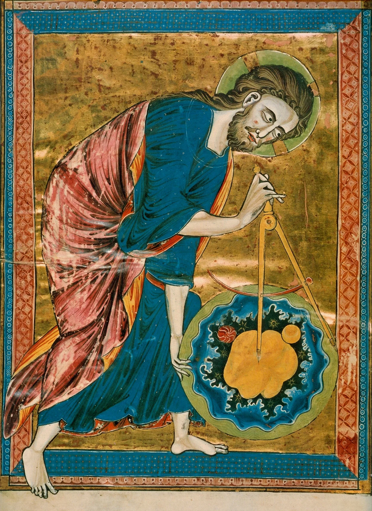
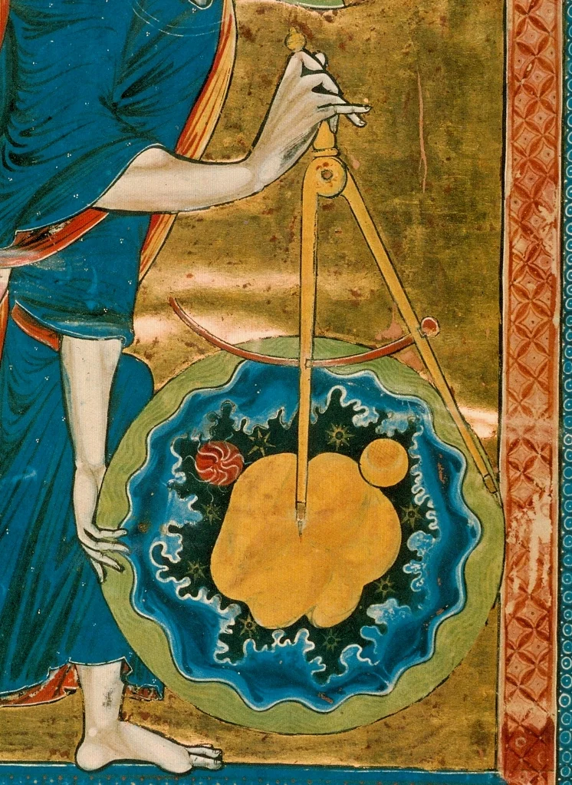
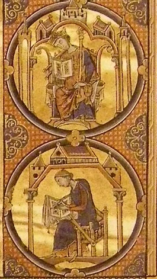

아직 펼치지 않은 카드손으로 그린 말씀 · 5도덕 성경 「설계자 하나님」13세기 프랑스 왕실 성경의 첫머리에서, 하나님은 손에 무엇을 들고 세상을 만들고 있을까요?하나님이 컴퍼스로 세상을 그리고 계셔!
1220년대프랑스 파리 · 지금은 오스트리아 빈 국립도서관
도덕 성경 「설계자 하나님」
1220년대 파리에서 왕실을 위해 만든 그림 성경, 『도덕 성경』은 하나님이 커다란 컴퍼스로 세상을 재는 그림으로 시작해요. 그림 속 컴퍼스를 쓰는 차례 그대로, 바늘을 꽂고 다리를 벌려 세상의 둘레를 그어 보세요. 그리고 같은 무렵 만든 또 한 권의 맨 마지막 쪽에서, 이 책을 만든 사람을 만나 보세요.
하나님이 커다란 컴퍼스로 동그란 세상을 그리고 계셔. 우리도 컴퍼스처럼 동그라미를 그려 볼까?
검수 전 시안이에요(기준서 1판). 따라 쓰기 판의 컴퍼스와 원은 이 안내서가 그림 속 컴퍼스를 바탕으로 단순하게 그린 것이에요. 장면에는 기록에 있는 것만 옮겼고, 상상은 ‘눈 감고 상상해 보기’에만 썼어요.
시안 확인용카드 단계 미리 보기
1
컴퍼스로 긋는 세상
『도덕 성경』은 13세기 전반 프랑스에서 왕실 사람들을 위해 만든 아주 큰 그림 성경이에요. 이른 네 벌은 모두 세상을 지으시는 하나님의 그림 한 장으로 시작해요(『워드 앤드 이미지』 2002). 그 가운데 빈 2554번의 첫 그림이 특히 이름나 있어요.
컴퍼스는 한쪽 다리의 바늘을 꽂고, 다른 다리를 빙 돌려 원을 그리는 도구예요. 그림 속 하나님도 바늘 다리를 원의 한가운데에, 다른 다리를 원의 가장자리에 대고 있어요. 왼손은 세상의 가장자리를 짚고 있어요(팩시밀리 파인더).
아래 판에서 빨간 점부터 세 획을 따라 그어 보세요. 컴퍼스를 쓰는 차례 그대로예요. 판의 그림은 이 안내서가 그림 속 컴퍼스를 바탕으로 단순하게 그렸어요.

그림 속 하나님처럼 컴퍼스로 원을 그려 보세요. 빨간 점에서 시작해, 흐린 선을 손가락이나 마우스로 따라 그어요.
빨간 점에서 시작해 흐린 선을 따라 그어 보세요. 다 그으면 먹색으로 바뀌어요. 원은 한 바퀴를 끝까지 돌아요.
세 획으로 세상의 둘레를 그었어요. 바늘을 꽂은 한가운데에서 둘레까지, 그림 속 하나님도 이렇게 재고 있어요.
원 안에는 가운데 금빛 덩어리, 그 둘레의 푸른 물결, 작은 별이 뜬 어두운 하늘, 그리고 작은 둥근 것 둘이 있어요. 하늘과 땅, 해와 달을 짓는 일을 한 그림에 모았다고 해요(팩시밀리 파인더).
하나님이 커다란 컴퍼스로 동그라미를 그리고 계셔. 우리도 따라 그려 볼까?
물어보기컴퍼스 바늘은 어디에 꽂혀 있을까?
2
마지막 쪽의 두 사람
『도덕 성경』의 한 쪽에는 동그란 그림 틀이 여덟 개 있어요. 위 원에는 성경 장면을, 아래 원에는 그 장면의 뜻을 푼 그림을 그리고, 옆의 좁은 단에 두 글을 번갈아 적었어요(스마트히스토리 · 위키백과 길잡이). 빈 2554번에는 이런 원 그림이 1,032개 있어요(팩시밀리 파인더).
빈 국립도서관에는 같은 무렵의 『도덕 성경』이 한 권 더 있어요. 옛 프랑스어로 쓴 2554번과 달리 1179번은 라틴어로 썼어요(팩시밀리 파인더 · 『게스타』 2021). 그 책의 맨 마지막 쪽, 요한계시록이 끝나는 자리의 마지막 두 원이 이 그림이에요(유타 대학 도서관).
위 원에서는 관을 쓴 왕이 책을 펼쳐 읽어요. 그 책은 『도덕 성경』으로 보여요. 아래 원에서는 한 사람이 책상 앞에서 그 책을 만들고 있어요(『워드 앤드 이미지』 2002).

첫 쪽에서는 하나님이 컴퍼스로 세상을 짓고, 마지막 쪽에서는 사람이 그 이야기를 책으로 지어요.
맨 마지막 쪽이야. 위에는 책 읽는 임금님, 아래에는 책 만드는 사람이 있어.
물어보기임금님이 읽는 책은 무슨 책일까?
눈 감고 상상해 보기
1220년대 파리, 왕실 책을 만드는 밝은 작업대. 넓은 양피지 위에 쇠 컴퍼스를 대요. 바늘 끝이 콕 박히고, 다른 다리가 천천히 한 바퀴를 돌아요. 창으로 들어온 빛이 쇠다리에 반짝여요. 이제 이 원 안에 세상을 그려 넣을 차례예요.
눈을 감아 봐. 넓은 종이 위에 컴퍼스를 댔어. 바늘을 콕, 빙그르르 한 바퀴. 이 동그라미 안에 무엇을 그려 넣을까?
나의 자리
세 획으로 원을 그어 본 지금, 다시 보세요. 컴퍼스를 쥔 오른손, 그리고 세상의 가장자리를 가만히 짚은 왼손.
내 하루를 설계한다면, 나는 어떤 질서와 여백을 그려 넣고 싶나요?
컴퍼스로 동그라미를 그려 본 적 있어?
마음에 닿는 한 줄을 고르거나 직접 써 보세요. 한 줄을 남기면 이 자리의 도장이 찍혀요. 이 기기에만 저장돼요.
더 깊이
궁금한 칸만 펼쳐 읽어도 괜찮아요.
알고 보면
쪽마다 여덟 원 빈 2554번은 130장의 한쪽 면에만 그림을 그렸어요. 그래서 책을 펼치면 원 그림 열여섯 개가 있는 펼침과 빈 펼침이 번갈아 나와요. 왼쪽 쪽은 파란 바탕, 오른쪽 쪽은 분홍 바탕이 많아요. 설명 글은 옛 프랑스어 ‘이시’(여기)로 시작하는 것이 많아, 바로 옆 그림을 가리켜요(팩시밀리 파인더).
가장 값비싼 책 그림이 유난히 많아서, 『도덕 성경』은 중세 필사본 가운데 가장 값비싼 책에 들어요. 왕실이 아니면 만들기 어려웠어요(스마트히스토리).
그 시대의 편견 이 책들의 풀이 글과 그림에는 유대인을 나쁘게 그린 것이 곳곳에 있어요. 원뿔 모양 모자로 유대인을 표시했고, 이런 그림은 뒤 시대에 유대인을 향한 미움과 폭력을 부추겼어요(스마트히스토리). 이 카드에는 그런 그림을 싣지 않았어요.
지워진 바친 글 빈 1179번에는 이 책을 바친다는 글이 있었지만 오래전에 지워졌어요. 2021년의 한 논문은 여러 빛으로 나누어 찍는 다중 분광 촬영으로 그 글에서 받을 사람의 이름을 읽어 냈어요. 그 사람은 프랑스 왕실(카페 왕가) 사람이 아니었대요(『게스타』 2021).
기록마다 다른 점
언제 만들었을까 위키미디어 공용과 팩시밀리 파인더는 1220~1230년 무렵, 1220년대 파리라고 해요. 2021년 『게스타』의 논문은 2554번과 1179번을 1208년 이후로 앞당겨 볼 수 있다고 해요.
마지막 쪽의 왕은 누구일까 유타 대학 도서관은 프랑스 왕 루이 8세라고 적어요. 위키백과도 필리프 2세가 아들 루이 8세를 위해 만들게 했을 수 있다는 생각을 소개해요. 하지만 2021년 『게스타』 논문은 지워진 바친 글이 가리키는 사람이 프랑스 왕실 사람이 아니라고 봐요.
함께 읽는 말씀
말씀은 뜻만 옮기고, 본문은 대한성서공회 개역개정으로 이어 드려요.
잠언 8장 27절 지혜가, 하나님이 하늘을 지으시고 깊은 바다 위에 둘레를 그으실 때 자기가 거기 있었다고 말하는 구절이에요. 1611년의 영어 킹 제임스 성경은 이 ‘둘레’를 컴퍼스(compass)라는 낱말로 옮겼어요.
창세기 1장 1절, 16절 하나님이 하늘과 땅을 지으시고, 큰 빛과 작은 빛을 만드셨다는 구절이에요. 원 안의 작은 둥근 것 둘과 함께 보세요.
직접 가 보기
확인한 날 · 2026년 11월 18일 · 바뀌기 쉬운 정보라 정기적으로 다시 확인해요
두 권 모두 오스트리아 빈의 국립도서관에 있어요. 전시하는지는 가기 전에 꼭 확인하세요.
2554번은 국립도서관 누리집에서 모든 쪽을 사진으로 볼 수 있어요. 유대인을 나쁘게 그린 쪽도 들어 있으니, 아이와 함께 볼 때는 미리 살펴보세요.
세 획의 원 금박
컴퍼스의 세 획을 다 그으면 카드에 금박이 입혀져요.
컴퍼스의 세 획을 따라 긋기
아이와 함께 채색
아이와 함께 ‘영화처럼 보기’를 끝까지 보면 카드가 채색돼요.
아이와 함께 ‘영화처럼 보기’를 끝까지 보기
근거 보기 (11)
- 위키미디어 공용: God the Geometer — 빈 2554번 1장 뒷면, 1220~1230년 무렵, 컴퍼스는 창조의 상징이라는 설명
- Facsimile Finder: What if God was an Architect?(빈 2554번 새 영인본 소개) — 컴퍼스로 세상을 잼, 하늘·땅·해·달을 한 그림에, 왼손이 세상의 가장자리를 짚음, 첫 그림으로 이름난 책, 1179번에도 비슷한 그림
- Facsimile Finder: Vienna Bible Moralisée in French — 프랑스어 설명 글(여럿이 ‘ici’로 시작), 1220년대 파리, 원 그림 1,032개를 한 쪽에 여덟씩, 130장·한쪽 면에만 그림, 파란 바탕·분홍 바탕, 1179번과 그림 짜임이 가까움
- Smarthistory: Bible moralisée (moralized bibles) — 쪽마다 원 여덟 개, 성경 글과 풀이 글, 그림이 많아 가장 값비싼 필사본, 왕실이 맞춤, 곳곳의 반유대 그림(원뿔 모자)과 그 해악
- Authorizing the Toledo moralized Bible: Exegesis and the Gothic Matrix(Word & Image 18, 2002 · 아카데미아) — 이른 네 벌 모두 하나님이 세상을 지으시는 그림으로 시작, 마지막 두 원의 왕과 필경사(왕은 도덕 성경을 읽고 필경사는 그 책을 만듦)
- 유타 대학 도서관: Bible Moralisée — Conclusion of the Apocalypse, the King of France (Louis VIII), and the Maker of the Bible Moralisée(빈 1179번 246장 앞면, 1220년 무렵)
- Gesta 60/1(2021) 목차의 논문 요약 — 빈 1179번(라틴어 도덕 성경)에만 있는 바친 글, 오래전에 지워짐, 다중 분광 촬영으로 카페 왕가가 아닌 받을 사람의 이름을 읽음, 두 책을 1208년 이후로
- 오스트리아 국립도서관 디지털 자료: 빈 2554번 전체(D. 간츠의 글 각주에 실린 주소, 2025년 3월 접속 · 이 창에서는 열리지 않음)
- King James Version 잠언 8장 27절(Bible Study Tools) — when he set a compass upon the face of the depth
- Wikipedia: Bible moralisée — 길잡이(첫 그림의 하나님과 컴퍼스, 1179번은 루이 8세를 가르치려고 라틴어로 썼을 수 있음, 쪽마다 여덟 그림과 좁은 글 단, 필리프 2세가 아들을 위해 맞췄을 수 있다는 생각)
- 대한성서공회 개역개정: 잠언 8장 · 창세기 1장
그림·사진·소리 출처
‘처음 만나는 기독교 문화’의 깊은 카드예요. 카드 단계와 남긴 글은 이 기기에만 저장돼요.